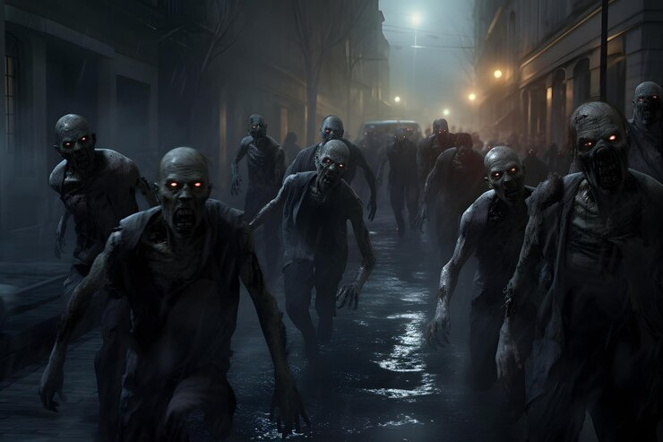

<!DOCTYPE html>
<html lang="en">
<head>
    <meta charset="UTF-8">
    <meta name="viewport" content="width=device-width, initial-scale=1.0">
    <title>La dosis final</title>
    <link rel="stylesheet" href="../css/estilos.css">
</head>
<body>
    <div class="contenedor">
    <p id="titulo"></p>
    <div id="titulo-imag"></div>
    <p id="parrafo1"></p>
    <div id="imag1"></div>
    <p id="parrafo2"></p>
    <div id="imag2"></div>
    <p id="parrafo3"></p>
    <div id="imag3"></div>
    <p id="parrafo4"></p>
    <div id="imag4"></div>
    <p id="parrafo5"></p>
    <div id="imag5"></div>
    <p id="parrafo6"></p>
    <div id="imag6"></div>
    <p id="parrafo7"></p>
    <div id="imag7"></div>
    <p id="parrafo8"></p>
</div>

    <script>
        let titulo = "La dosis final";
        let parrafo1 = "Era una noche calurosa y con mis amigas fuimos a al boliche el cual frecuentamos, una de ellas, Mia, se encontró a un amigo de ella y nos ofreció “pastillas alucinógenas”, aclaraba que eran nuevas en el mercado y gratis por ser nosotras las primeras en probarlas. Luego de estar debatiendo por un rato si las consumiamos o no, decidimos hacerlo.";
        let parrafo2 = "Pero no sentimos ningún efecto al final de la noche, entonces le comentamos a Juan, quien nos dio las pastillas, que no las largue al mercado ya que no generan ningún efecto alucinógeno. Al dia siguiente comence a sentirme rara, mareada y con mucho dolor de cabeza, lo ignore porque pensaba que era la resaca de la noche anterior por haber tomado mucho alcohol, entonces decidí tomarme un ibuprofeno y esperar a que se me pase, lo cual no paso. Al otro día seguía padeciendo el mismo dolor, por lo tanto decidí preguntarles a mis amigas si se sentían de igual manera y coincidimos en que todas teníamos los mismos síntomas, y comenzamos a preocuparnos. Al tercer día empecé a ver cambios raros en mi piel, se veía más pálida.";
        let parrafo3 = "Me alarme, decidí ir al hospital a que me revisaran pero los doctores no podían encontrar una causa a este cambio ya que los valores de todos los estudios estaban normales, y por la noche mis ojos comenzaron a ponerse rojos y pensé que era por el estrés que generaba la preocupación por los cambios que sufría mi cuerpo. Más tarde, por la ansiedad, me agarró hambre pero nada de lo que comía me satisfacía y tuve pensamientos extraños, como el deseo de comer carne humana, lo que me hizo vomitar del asco. Evite salir fuera de mi casa por un tiempo a raíz de este extraño apetito. Prendí la televisión como de costumbre y al ver las noticias me lleve la sorpresa de que había una invasión zombie y me horrorice, al observarlos con detenimiento, vi que compartiamos características, como la piel pálida y comer humanos, al segundo sentí un escalofríos que recorrió todo mi cuerpo quedando inmovil, instantáneamente mi cuerpo empezó a moverse por su cuenta queriendo salir de la casa, por momentos volvía a tener control sobre él, pero no por mucho tiempo. Ya no podía controlar en qué momento actuaba como zombie y en qué momento actuaba con conciencia siendo responsable de mis actos. Moví algunos muebles para el lado de las puertas y ventanas para tapar las posibles salidas, para evitar salir cuando me convierta en zombie, solo pensaba en aislarme del mundo para no poder lastimar a mis seres queridos. Después de unos minutos entré en desesperación al sentir como todo mi cuerpo iba cambiando nuevamente para volver a transformarme. En cuestión de tiempo ya me encontraba moviendo los muebles, impaciente a unirme a la horda de zombies. En un abrir y cerrar de ojos ya me encontraba con ellos.";
        let parrafo4 = "De repente escuchamos un ruido y fuimos hacia donde provenía y observando la situación, era mi amiga la que había causado el ruido, estaba rodeada de zombies, sin poder escaparse, era doloroso ver esa situación sin yo poder hacer algo al respecto pero me sume a ellos, y Maria al ser mordida por uno de ellos se convierte en uno de nosotros. A pesar de lo que acababa de presenciar seguimos con nuestro rumbo en busca de mas humanos para comer, cuando en una cuadra me tope con una vidriera con televisores prendidos.";
        let parrafo5 = "Estaba el canal de noticias puesto, el titular decía que se está probando una cura para esta epidemia y que pronto se podría utilizar, me sentía muy emocionada por volver a ser yo. Cada día que saliamos a recorrer pasabamos por el mismo lugar y veía la televisión por si anunciaban que se encontró una cura. Un día por la tarde informaron que ya habían sacado el antídoto, contaban que lo van a distribuir por los países infectados mediante un avión fumigador.";
        let parrafo6 = "Ese mismo día, más tarde, el avión pasó rociandonos a todos con la cura, en cuestión de minutos ya podíamos ver cambios en nuestro cuerpo, y yo recobraba poco a poco la movilidad de mi cuerpo. Rápidamente fui a mi casa en búsqueda de mi celular para contactarme con mis amigas mediante nuestro grupo de Whatsapp, seguía con la duda de cómo todo esto se pudo haber originado, organizamos que al día siguiente nos reuniriamos para iniciar una investigación sobre esto.";
        let parrafo7 = "Fueron días muy largos de contactar a gente que padecio los mismos síntomas que nosotras hasta llegar a la conclusión que todo comenzó en aquella fiesta, entre todos comenzamos a generar diferentes hipótesis, pensando en lo que habíamos hecho fuera de lo habitual. En el medio de este gran debate con mis amigas recordamos que Juan nos había dado pastillas para probar y que creíamos que no provocaron ningún efecto, pero esta sería la hipótesis más acertada. Ideamos un plan para vengarnos de Juan, que consiste en organizar una fiesta e invitarlo, disimulando nuestro enojo, le convidariamos un trago el cual tendría la misma pastilla que nos dio y así tenga una cucharada con su propia medicina. El plan funcionó tal y como lo imaginamos, decidimos encerrarlo en una habitación para evitar que haga daño a otras personas.";
        let parrafo8 = "Al cabo de tres días, le dimos el antídoto para luego llevarlo a la comisaría a que confiese sus delitos y su sentencia fue una cadena perpetua por haber puesto en riesgo al mundo y nosotras nos quedamos satisfechas y con una gran anécdota. FIN.";
    
        let cadena1 = titulo.split('');
        let cadena2 = parrafo1.split('');
        let cadena3 = parrafo2.split('');
        let cadena4 = parrafo3.split('');
        let cadena5 = parrafo4.split('');
        let cadena6 = parrafo5.split('');
        let cadena7 = parrafo6.split('');
        let cadena8 = parrafo7.split('');
        let cadena9 = parrafo8.split('');
        
        console.log(cadena9);

        let contador1 = 0;
        let contador2 = 0;
        let contador3 = 0;
        let contador4 = 0;
        let contador5 = 0;
        let contador6 = 0;
        let contador7 = 0;
        let contador8 = 0;
        let contador9 = 0;

        var frase1 = setInterval(escribir1, 50);
        var frase2 = '';
        var frase3 = '';
        var frase4 = '';
        var frase5 = '';
        var frase6 = '';
        var frase7 = '';
        var frase8 = '';
        var frase9 = '';

        function escribir1(){
            if (contador1 < cadena1.length){
                document.getElementById('titulo').innerHTML += cadena1[contador1];
                contador1 = contador1 + 1;
            }
            else if(contador1 == cadena1.length){
                clearInterval(frase1);
                document.getElementById('titulo-imag').innerHTML = '';
                frase2 = setInterval(escribir2,10);
            }

        }
        function escribir2(){
            if (contador2 < cadena2.length){
                if( contador2 >=0 && contador2 < 1){
                    document.getElementById('parrafo1').innerHTML += '<b>'+cadena2[contador2]+'</b>';
                    contador2 = contador2 + 1;
                }
                else{
                    document.getElementById('parrafo1').innerHTML += cadena2[contador2];
                    contador2 = contador2 + 1;
                }
            }
            else{
                clearInterval(frase2);
                document.getElementById('imag1').innerHTML = '';
                frase3 = setInterval (escribir3,10);
            }

        }
        function escribir3(){
            if (contador3 < cadena3.length){
                if( contador3 >=0 && contador3 < 1){
                    document.getElementById('parrafo2').innerHTML += '<b>'+cadena3[contador3]+'</b>';
                    contador3 = contador3 + 1;
                }
                else{
                    document.getElementById('parrafo2').innerHTML += cadena3[contador3];
                    contador3 = contador3 + 1;
                }
            }
            else{
                clearInterval(frase3);
                document.getElementById('imag2').innerHTML = '';
                frase4 = setInterval (escribir4,10);
            }

        }
        function escribir4(){
            if (contador4 < cadena4.length){
                if( contador4 >=0 && contador4 < 1){
                    document.getElementById('parrafo3').innerHTML += '<b>'+cadena4[contador4]+'</b>';
                    contador4 = contador4 + 1;
                }
                else{
                    document.getElementById('parrafo3').innerHTML += cadena4[contador4];
                    contador4 = contador4 + 1;
                }
            }
            else{
                clearInterval(frase4);
                document.getElementById('imag3').innerHTML = '';
                frase5 = setInterval (escribir5,10);
            }

        }
        function escribir5(){
            if (contador5 < cadena5.length){
                if( contador5 >=0 && contador5 < 1){
                    document.getElementById('parrafo4').innerHTML += '<b>'+cadena5[contador5]+'</b>';
                    contador5 = contador5 + 1;
                }
                else{
                    document.getElementById('parrafo4').innerHTML += cadena5[contador5];
                    contador5 = contador5 + 1;
                }
            }
            else{
                clearInterval(frase5);
                document.getElementById('imag4').innerHTML = '';
                frase6 = setInterval (escribir6,10);
            }

        }
        function escribir6(){
            if (contador6 < cadena6.length){
                if( contador6 >=0 && contador6 < 1){
                    document.getElementById('parrafo5').innerHTML += '<b>'+cadena6[contador6]+'</b>';
                    contador6 = contador6 + 1;
                }
                else{
                    document.getElementById('parrafo5').innerHTML += cadena6[contador6];
                    contador6 = contador6 + 1;
                }
            }
            else{
                clearInterval(frase6);
                document.getElementById('imag5').innerHTML = '';
                frase7 = setInterval (escribir7,10);
            }

        }
        function escribir7(){
            if (contador7 < cadena7.length){
                if( contador7 >=0 && contador7 < 1){
                    document.getElementById('parrafo6').innerHTML += '<b>'+cadena7[contador7]+'</b>';
                    contador7 = contador7 + 1;
                }
                else{
                    document.getElementById('parrafo6').innerHTML += cadena7[contador7];
                    contador7 = contador7 + 1;
                }
            }
            else{
                clearInterval(frase7);
                document.getElementById('imag6').innerHTML = '';
                frase8 = setInterval (escribir8,10);
            }

        }
        function escribir8(){
            if (contador8 < cadena8.length){
                if( contador8 >=0 && contador8 < 1){
                    document.getElementById('parrafo7').innerHTML += '<b>'+cadena8[contador8]+'</b>';
                    contador8 = contador8 + 1;
                }
                else{
                    document.getElementById('parrafo7').innerHTML += cadena8[contador8];
                    contador8 = contador8 + 1;
                }
            }
            else{
                clearInterval(frase8);
                document.getElementById('imag7').innerHTML = '';
                frase9 = setInterval (escribir9,10);
            }

        }
        function escribir9(){
            if (contador9 < cadena9.length){
                if( contador9 >=241 && contador9 < 244){
                    document.getElementById('parrafo8').innerHTML += '<b>'+cadena9[contador9]+'</b>';
                    contador9 = contador9 + 1;
                }
                else{
                    document.getElementById('parrafo8').innerHTML += cadena9[contador9];
                    contador9 = contador9 + 1;
                }
            }
            else{
                clearInterval(frase9);
            }

        }
        </script>
</body>
</html>